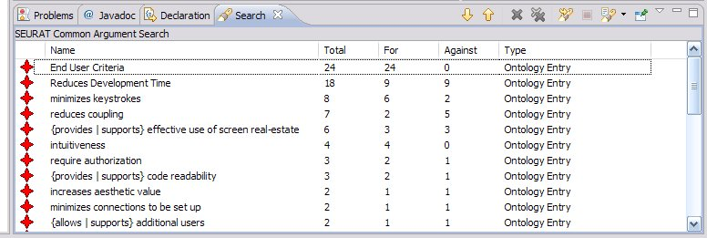

SEURAT provides a search query designed to locate arguments based on their frequency. This can be done for each of the following argument types: assumption, claim, and ontology entry.
After the search completes, the applicable arguments are displayed in in the Eclipse search view. You can sort and browse the arguments using the total number of references, the number of times used to argue in support of an alternative, and the number of times it opposed an alternative. The following figure shows some an example of the output generated by a common argument search.
